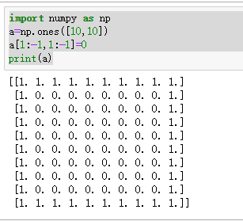
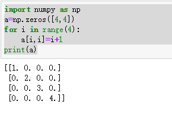
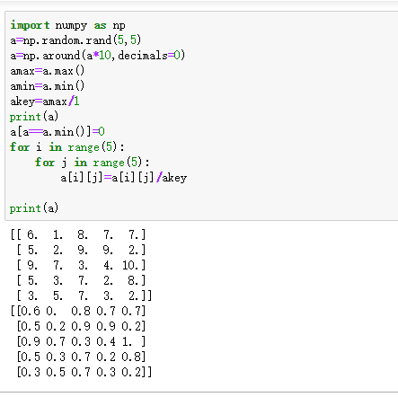

1.创建一个边界值为1而内部都是0的数组，图例如下：
[提示：]解此题可以先把所有值都设置为1，这是大正方形；其次，把边界除外小正方形全部设置为0。
本题用到numpy的切片原理。多维数组同样遵循x[start:stop:step]的原理。
[1. 1. 1. 1. 1. 1. 1. 1. 1. 1.]
[1. 0. 0. 0. 0. 0. 0. 0. 0. 1.]
[1. 0. 0. 0. 0. 0. 0. 0. 0. 1.]
[1. 0. 0. 0. 0. 0. 0. 0. 0. 1.]
[1. 0. 0. 0. 0. 0. 0. 0. 0. 1.]
[1. 0. 0. 0. 0. 0. 0. 0. 0. 1.]
[1. 0. 0. 0. 0. 0. 0. 0. 0. 1.]
[1. 0. 0. 0. 0. 0. 0. 0. 0. 1.]
[1. 0. 0. 0. 0. 0. 0. 0. 0. 1.]
[1. 1. 1. 1. 1. 1. 1. 1. 1. 1.]
1 import numpy as np
2 a=np.ones([10,10])
3 a[1:-1,1:-1]=0
4 print(a)
2.在数组主对角线上创建一个值为1,2,3,4的5x5矩阵，图例如下：
[1 0 0 0]
[0 2 0 0]
[0 0 3 0]
[0 0 0 4]
1 import numpy as np
2 a=np.zeros([4,4])
3 for i in range(4):
4 a[i,i]=i+1
5 print(a)
3.数组归一化操作
生成一个随机的5*5矩阵，找出最大值和最小值，然后把最大值和最小值分别用1和0表示，其他值则介于在0和1中间。
import numpy as np
a=np.random.rand(5,5)
a=np.around(a*10,decimals=0)
amax=a.max()
amin=a.min()
akey=amax/1
print(a)
a[a==a.min()]=0
for i in range(5):
for j in range(5):
a[i][j]=a[i][j]/akey
print(a)